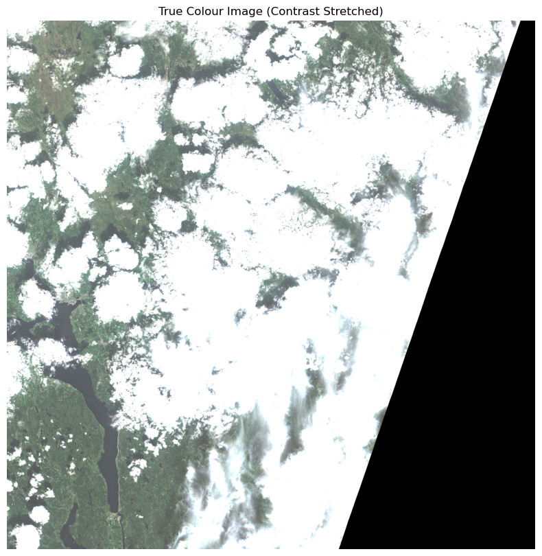
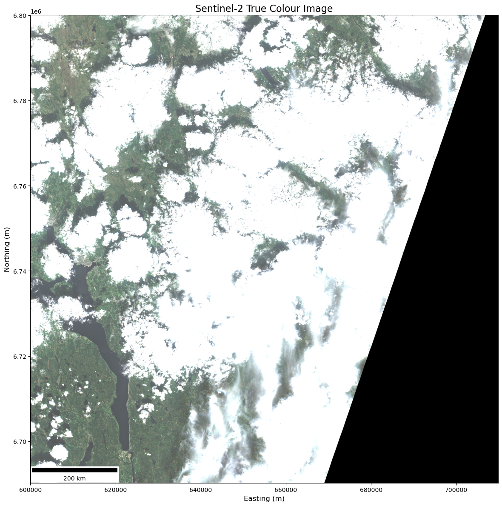

Visualising Sentinel-2 Data with Python#
Sentinel-2 data are delivered as .SAFE folders, which contain satellite imagery and metadata for a specific sensing event. These data are divided tiles representing fixed spatial areas on Earth’s surface, each measuring approximately 100 km x 100 km.
In this tutorial, you’ll learn how to:
Load Sentinel-2 Level-2A
.SAFEdata locallyExtract and plot the data for an individual band
Extract and plot a true colour image of the data by stacking together the RGB bands (B04, B03, B02)
Let’s get started!
import os
import glob
import rasterio
import numpy as np
import matplotlib.pyplot as plt
Naming Convention#
Each .SAFE folder has a structured name with embedded metadata, using the following general format:
S2[A/B/C]_MSIL2A_YYYYMMDDTHHMMSS_Nxxxx_Rxxx_TXXXXX_YYYYMMDDTHHMMSS.SAFE
Component |
Meaning |
|---|---|
|
Satellite platform (Sentinel-2A, B, or C) |
|
Processing level (L2A = surface reflectance) |
|
Sensing date and time (UTC) |
|
Processing baseline version |
|
Relative orbit number |
|
Tile ID, e.g. |
|
Product generation time |
The Tile ID (e.g. T32VPN) corresponds to the Military Grid Reference System (MGRS), and refers to a specific geographic region. This ID appears consistently in filenames and paths throughout the product.
Understanding the Sentinel-2 .SAFE folder structure#
The .SAFE folder has a nested directory structure. Each tile (granule) is stored under the GRANULE/ subdirectory, and contains image files at different resolutions in IMG_DATA/.
A generalised path to a 10 m band image looks like:
<PRODUCT>.SAFE/GRANULE/L2A_<TILE_ID>_<SENSING_TIME>/IMG_DATA/R10m/<TILE_ID>_<SENSING_TIME>_<BAND>_10m.jp2
Example structure:#
S2B_MSIL2A_20250708T104629_N0511_R051_T32VPN_20250708T132039.SAFE/
├── GRANULE/
│ └── L2A_T32VPN_20250708T104854/
│ └── IMG_DATA/
│ ├── R10m/
│ │ ├── T32VPN_20250708T104629_B02_10m.jp2
│ │ └── T32VPN_20250708T104629_SCL_10m.jp2
│ ├── R20m/
│ └── R60m/
R10m,R20m,R60m: Folders containing images at 10 m, 20 m, and 60 m resolutions respectively.Image files follow the pattern:
<TILE_ID>_<SENSING_TIME>_<LAYER>_<RES>.jp2
Image and Auxiliary Data Layers#
The table below summarises all bands and auxiliary layers provided in L2A products:
Layer |
Name |
Description |
Central Wavelength (nm) |
|---|---|---|---|
B01 |
Coastal aerosol |
Aerosol scattering |
443 |
B02 |
Blue |
Visible blue light |
490 |
B03 |
Green |
Visible green light |
560 |
B04 |
Red |
Visible red light |
665 |
B05 |
Vegetation red edge |
Red edge for vegetation analysis |
705 |
B06 |
Vegetation red edge |
Red edge for vegetation analysis |
740 |
B07 |
Vegetation red edge |
Red edge for vegetation analysis |
783 |
B08 |
NIR |
Near-infrared (vegetation, biomass) |
842 |
B08A |
Narrow NIR |
Narrow band NIR |
865 |
B09 |
Water vapour |
Water vapour absorption |
945 |
B10 |
SWIR - Cirrus |
Cirrus cloud detection |
1375 |
B11 |
SWIR |
Shortwave infrared |
1610 |
B12 |
SWIR |
Shortwave infrared |
2190 |
AOT |
Aerosol Optical Thickness |
Aerosol concentration over land |
N/A |
SCL |
Scene Classification |
Classification of land cover and clouds |
N/A |
WVP |
Water Vapour |
Total column water vapour |
N/A |
TCI |
True Colour Image |
RGB composite (from B04, B03, B02) |
N/A |
Note: “N/A” in wavelength indicates layers are derived, not based on a single spectral band.
Tips for New Users#
Start with TCI or RGB (B04, B03, B02) for quick visual checks.
Use SCL (Scene Classification) to filter clouds, shadows, and invalid pixels.
Combine bands for vegetation indices (e.g. NDVI = (B08 - B04)/(B08 + B04)).
All images are georeferenced JP2 files, suitable for use in QGIS, Python (e.g. with
rasterio), or other GIS tools.
Our goal:
Find the granule folder
Locate the 10m resolution images inside the
IMG_DATAfolder (sometimes in a subfolder calledR10m)Identify the RGB bands:
Band 4 (B04) – Red
Band 3 (B03) – Green
Band 2 (B02) – Blue
# MAKE THIS SCRIPT MORE GENERIC TO TAKE RESOLUTION AS AN ARGUMENT. INCLUDE WITHIN THE FUNCTION AS ARG. MAKE MORE USER FRIENDLY.
# REMOVE THE OUT GOAL BIT OR MOVE IT LATER
# Replace this path with your own Sentinel-2 .SAFE folder location
safe_path = 'data/S2B_MSIL2A_20250708T104629_N0511_R051_T32VPN_20250708T132039.SAFE'
# Locate the granule folder (usually just one granule per SAFE)
granule_dir = os.path.join(safe_path, 'GRANULE')
granule_subdir = next(os.walk(granule_dir))[1][0]
# Locate the IMG_DATA folder inside the granule
img_data_dir = os.path.join(granule_dir, granule_subdir, 'IMG_DATA')
# Some products store the 10m bands in an R10m subfolder
possible_dirs = [os.path.join(img_data_dir, 'R10m'), img_data_dir]
for d in possible_dirs:
if os.path.exists(d):
img_path = d
break
else:
raise FileNotFoundError("Could not find the 10m resolution image folder")
Finding bands/layers automatically#
def find_band(directory, pattern):
files = glob.glob(os.path.join(directory, f'*_{pattern}_10m.jp2'))
if not files:
raise FileNotFoundError(f"Band {pattern} not found in {directory}")
return files[0]
def load_band(path):
with rasterio.open(path) as src:
return src.read(1).astype(np.float32), src.transform
Loading the RGB bands#
Using our helper functions, we can load the three bands into numpy arrays.
Sentinel-2 reflectance data is stored as scaled integers, so we’ll convert them to floats and scale by 10,000 to get values between 0 and 1.
# Find band file paths
band_files = {
'red': find_band(img_path, 'B04'),
'green': find_band(img_path, 'B03'),
'blue': find_band(img_path, 'B02')
}
# Load the bands
red, transform = load_band(band_files['red'])
green, _ = load_band(band_files['green'])
blue, _ = load_band(band_files['blue'])
# Stack the red, green, and blue bands along the last axis to form a 3D RGB image
# Shape becomes (height, width, 3)
rgb = np.dstack((red, green, blue)).astype(np.float32) / 10000.0
# Scale the digital number values to reflectance by dividing by 10000.0
# (Sentinel-2 Level-2A data is typically scaled this way)
# Clip reflectance values to a maximum of 0.3
# This is a form of contrast stretching: it suppresses overly bright areas (e.g. clouds)
# and enhances darker land surfaces (e.g. vegetation, soil, water)
rgb_clipped = np.clip(rgb, 0.0, 0.3)
# Re-normalise the clipped image to the range [0.0, 1.0] for correct display in matplotlib
# This means 0.3 (the max clipped reflectance) becomes pure white (1.0),
# and anything at or below 0.0 remains black (0.0)
rgb_normalised = rgb_clipped / 0.3
Plotting the True Colour image#
Finally, we display the stretched RGB image using Matplotlib.
plt.figure(figsize=(10, 10))
plt.imshow(rgb_normalised)
plt.axis('off')
plt.title("True Colour Image (Contrast Stretched)")
plt.show()

We can add some features to improve appearence.
import matplotlib.pyplot as plt
from rasterio.plot import show
import matplotlib.patches as mpatches
from matplotlib_scalebar.scalebar import ScaleBar
# Create the plot with a white background and larger figure
fig, ax = plt.subplots(figsize=(12, 12), facecolor='white')
# Plot the RGB image with the geotransform
show(rgb_normalised.transpose(2, 0, 1), transform=transform, ax=ax)
# Title and axis labels
ax.set_title("Sentinel-2 True Colour Image", fontsize=16)
ax.set_xlabel("Easting (m)", fontsize=12)
ax.set_ylabel("Northing (m)", fontsize=12)
# Add a scale bar (uses pixel size from transform)
scalebar = ScaleBar(transform.a, units="m", location='lower left')
ax.add_artist(scalebar)
# Tidy up the layout
ax.grid(False)
plt.tight_layout()
plt.show()

Geographic Cropping of Sentinel-2 Imagery#
Instead of working with the entire 10 000×10 000 px tile, we can zoom in on any latitude/longitude rectangle.
Steps:
Open each band with
rasterio(so we get its CRS and transform).Transform our WGS84 bounding box into the image’s CRS.
Compute a pixel‐window from that box.
Read only that window from each band.
Stack, stretch and plot.
from rasterio.warp import transform_bounds
from rasterio.windows import from_bounds
def crop_band_to_bbox(band_path, lat_min, lat_max, lon_min, lon_max):
"""
Open a single-band file and crop it to the given lat/lon box.
Returns:
data: 2D np.array of cropped pixels
transform: new Affine transform for the cropped window
"""
with rasterio.open(band_path) as src:
# 1. Transform WGS84 bbox to the band CRS:
bbox_crs = transform_bounds(
'EPSG:4326',
src.crs,
lon_min, lat_min,
lon_max, lat_max,
densify_pts=21
)
# 2. Compute the pixel window:
window = from_bounds(*bbox_crs, transform=src.transform)
# 3. Read that window:
data = src.read(1, window=window).astype(np.float32)
# 4. Compute the new transform
new_transform = src.window_transform(window)
return data, new_transform
Now we’ll:
Define our lat/lon box
Crop each of the red, green and blue bands
Stack into an RGB array
Plot!
# 1. Your bounding box in WGS84:
lat_min, lat_max = 60.46, 60.51 # change to your own
lon_min, lon_max = 11.12, 11.19
# 2. Crop each band:
red_crop, _ = crop_band_to_bbox(band_files['red'], lat_min, lat_max, lon_min, lon_max)
green_crop, _ = crop_band_to_bbox(band_files['green'], lat_min, lat_max, lon_min, lon_max)
blue_crop, _ = crop_band_to_bbox(band_files['blue'], lat_min, lat_max, lon_min, lon_max)
# 3. Stack and convert to reflectance:
rgb_crop = np.dstack((red_crop, green_crop, blue_crop)).astype(np.float32) / 10000.0
rgb_crop_clipped = np.clip(rgb_crop, 0.0, 0.3)
rgb_crop_normalised = rgb_crop_clipped / 0.3
# 4. Plot:
plt.figure(figsize=(8, 8))
plt.imshow(rgb_crop_normalised)
plt.axis('off')
plt.title("Cropped Sentinel-2 True Colour")
plt.show()
---------------------------------------------------------------------------
CPLE_AppDefinedError Traceback (most recent call last)
File rasterio/crs.pyx:592, in rasterio.crs.CRS.from_epsg()
File rasterio/_err.pyx:289, in rasterio._err.exc_wrap_int()
CPLE_AppDefinedError: PROJ: internal_proj_create_from_database: /home/lukem/anaconda3/share/proj/proj.db lacks DATABASE.LAYOUT.VERSION.MAJOR / DATABASE.LAYOUT.VERSION.MINOR metadata. It comes from another PROJ installation.
During handling of the above exception, another exception occurred:
CRSError Traceback (most recent call last)
Cell In[8], line 6
3 lon_min, lon_max = 11.12, 11.19
5 # 2. Crop each band:
----> 6 red_crop, _ = crop_band_to_bbox(band_files['red'], lat_min, lat_max, lon_min, lon_max)
7 green_crop, _ = crop_band_to_bbox(band_files['green'], lat_min, lat_max, lon_min, lon_max)
8 blue_crop, _ = crop_band_to_bbox(band_files['blue'], lat_min, lat_max, lon_min, lon_max)
Cell In[7], line 14, in crop_band_to_bbox(band_path, lat_min, lat_max, lon_min, lon_max)
5 """
6 Open a single-band file and crop it to the given lat/lon box.
7
(...)
10 transform: new Affine transform for the cropped window
11 """
12 with rasterio.open(band_path) as src:
13 # 1. Transform WGS84 bbox to the band CRS:
---> 14 bbox_crs = transform_bounds(
15 'EPSG:4326',
16 src.crs,
17 lon_min, lat_min,
18 lon_max, lat_max,
19 densify_pts=21
20 )
21 # 2. Compute the pixel window:
22 window = from_bounds(*bbox_crs, transform=src.transform)
File ~/anaconda3/lib/python3.11/site-packages/rasterio/warp.py:147, in transform_bounds(src_crs, dst_crs, left, bottom, right, top, densify_pts)
113 def transform_bounds(
114 src_crs,
115 dst_crs,
(...)
119 top,
120 densify_pts=21):
121 """Transform bounds from src_crs to dst_crs.
122
123 Optionally densifying the edges (to account for nonlinear transformations
(...)
145 Outermost coordinates in target coordinate reference system.
146 """
--> 147 src_crs = CRS.from_user_input(src_crs)
148 dst_crs = CRS.from_user_input(dst_crs)
149 return _transform_bounds(
150 src_crs,
151 dst_crs,
(...)
156 densify_pts,
157 )
File rasterio/crs.pyx:790, in rasterio.crs.CRS.from_user_input()
File rasterio/crs.pyx:852, in rasterio.crs.CRS.from_string()
File rasterio/crs.pyx:596, in rasterio.crs.CRS.from_epsg()
CRSError: The EPSG code is unknown. PROJ: internal_proj_create_from_database: /home/lukem/anaconda3/share/proj/proj.db lacks DATABASE.LAYOUT.VERSION.MAJOR / DATABASE.LAYOUT.VERSION.MINOR metadata. It comes from another PROJ installation.